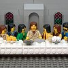

|
|
|
Matthew 26 |
 (26:1-2) "Jesus ... said unto his disciples, Ye know that after two
days is the feast of the passover, and the Son of man is betrayed to be crucified." (26:1-2) "Jesus ... said unto his disciples, Ye know that after two
days is the feast of the passover, and the Son of man is betrayed to be crucified."
Did Jesus forewarn his disciples about his coming death?
 Jesus and the Poor Jesus and the Poor
|
| 26:1
And it came to pass, when Jesus had finished all these sayings, he
said
unto his disciples,
|
| 26:2
Ye know that after two days is the feast of the passover, and the Son of
man is betrayed to be crucified.
|
| 26:3
Then assembled together the chief priests, and the scribes, and the elders
of the people, unto the palace of the high priest, who was called Caiaphas,
|
| 26:4
And consulted that they might take Jesus by subtilty, and kill him.
|
| 26:5
But they said, Not on the feast day, lest there be an uproar among the
people. |
 (26:6-11) (26:6-11)
Ointment for Jesus' head is more important than helping the poor.
(26:6-7) "When Jesus was in Bethany ... there came unto him a woman having an alabaster box of very precious ointment,
and poured it on his head."
(26:8) "When his disciples saw it, they had indignation, saying, To what purpose is this waste?"
(26:9) "For this ointment might have been sold for much, and given to the poor."
(26:10) "Jesus ... said ... she hath wrought a good work upon me."
(26:11) "For ye have the poor always with you; but me ye have not always."
|
| 26:6
Now when Jesus was in Bethany, in the house of Simon the leper,
|
| 26:7 There came unto him a woman having an alabaster box of very precious
ointment, and poured it on his head, as he sat at meat.
|
| 26:8
But when his disciples saw it, they had indignation, saying, To what
purpose is this waste?
|
| 26:9
For this ointment might have been sold for much, and given to the poor.
|
| 26:10
When Jesus understood it, he said unto them, Why trouble ye the woman? for
she hath wrought a good work upon me.
|
| 26:11
For ye have the poor always with you; but me ye have not always.
|
| 26:12
For in that she hath poured this ointment on my body, she did it for my
burial.
|
| 26:13
Verily I say unto you, Wheresoever this gospel shall be preached in the
whole world, there shall also this, that this woman hath done, be told for a
memorial of her. |
|
| 26:14
Then one of the twelve, called Judas Iscariot, went unto the chief
priests, |
|
| 26:15
And said unto them, What will ye give me, and I will deliver him unto you?
And they covenanted with him for thirty pieces of silver. |
|
| 26:16
And from that time he sought opportunity to betray him. |
|
| 26:17
Now the first day of the feast of unleavened bread the disciples came to
Jesus, saying unto him, Where wilt thou that we prepare for thee to eat the
passover? |
The Last Supper
|
| 26:18
And he said, Go into the city to such a man, and say unto him, The Master
saith, My time is at hand; I will keep the passover at thy house with my
disciples.
|
| 26:19
And the disciples did as Jesus had appointed them; and they made ready the
passover. |
|
| 26:20
Now when the even was come, he sat down with the twelve. |
|
| 26:21
And as they did eat, he said, Verily I say unto you, that one of you shall
betray me. |
|
| 26:22
And they were exceeding sorrowful, and began every one of them to say unto
him, Lord, is it I? |
|
| 26:23
And he answered and said, He that dippeth his hand with me in the dish,
the same shall betray me. |
|
| 26:24
The Son of man goeth as it is written of him: but woe unto that man by
whom the Son of man is betrayed! it had been good for that man if he had not
been born. |

 (26:26-28) Jesus tells his disciples to eat his body and drink his blood.
Did he mean this literally or figuratively? The question has divided Christians since the Reformation, but it's impossible to
tell from the passage itself. If God inspired the Bible, shouldn't he have made its interpretation
clear? (26:26-28) Jesus tells his disciples to eat his body and drink his blood.
Did he mean this literally or figuratively? The question has divided Christians since the Reformation, but it's impossible to
tell from the passage itself. If God inspired the Bible, shouldn't he have made its interpretation
clear?
|
| 26:25
Then Judas, which betrayed him, answered and said, Master, is it I? He
said unto him, Thou hast said.
|
| 26:26
And as they were eating, Jesus took bread, and blessed it, and brake it, and gave it to the
disciples, and said, Take, eat; this is my body. |
(26:26) "Jesus took bread, and blessed it, and brake it, and gave it to the disciples, and said, Take, eat; this is my body."
|
| 26:27
And he took the cup, and gave thanks, and gave it to them, saying, Drink ye all of it; |
(26:27) "And he took the cup, and gave thanks, and gave it to them, saying, Drink ye all of it."
|
| 26:28
For this is my blood of the new testament, which is shed for many for the remission
of sins. |
(26:28) "For this is my blood."
|
| 26:29
But I say unto you, I will not drink henceforth of this fruit of the vine,
until that day when I drink it new with you in my Father's kingdom. |
(26:29) "I will not drink henceforth of this fruit of the vine,
until that day when I drink it new with you in my Father's kingdom."
WooHoo! There will be wine to drink in heaven.
Is it OK to drink alcohol?
What the Bible says about alcohol
|
| 26:30
And when they had sung an hymn, they went out into the mount of Olives.
|
| 26:31
Then saith Jesus unto them, All ye shall be offended because of me this
night: for it is written, I will smite the shepherd, and the sheep of the
flock shall be scattered abroad. |
(26:31-32) "Then saith Jesus ... it is written,
I will smite the shepherd, and the sheep of the flock shall be scattered abroad. But after I am risen again,
I will go before you into Galilee."
Did Jesus forewarn his disciples about his coming death?
|
| 26:32
But after I am risen again, I will go before you into Galilee.
|
| 26:33 Peter answered and
said unto him, Though all men shall be offended because
of thee, yet will I never be offended. |
(26:33-34) "Peter ... said ... Though all men shall
be offended because of thee, yet will I never be offended. Jesus said ... this night,
before the cock crow, thou shalt deny me thrice."
Did Jesus say before the cock crow or before the cock crow twice?
Did the cock crow before or after Peter's denial?
|
| 26:34 Jesus said unto him, Verily I say unto thee, That
this night, before the cock crow, thou
shalt deny me thrice.
|
| 26:35
Peter said unto him, Though I should die with thee, yet will I not deny
thee. Likewise also said all the disciples.
|
| 26:36
Then cometh Jesus with them unto a place called Gethsemane, and saith unto
the disciples, Sit ye here, while I go and pray yonder. |
|
| 26:37
And he took with him Peter and the two sons of Zebedee, and began to be
sorrowful and very heavy. |
|
| 26:38
Then saith he unto them, My soul is exceeding sorrowful, even unto death:
tarry ye here, and watch with me. |
|
| 26:39
And he went a little farther, and fell on his face, and prayed, saying,
O my Father, if it be possible, let this cup pass from me: nevertheless not as
I will, but as thou wilt. |
(26:39) "And he went a little farther, and fell on his face."
(FOF)
(26:39, 42) "Let this cup pass from me"
Did Jesus ask God to save him from crucifixion?
|
| 26:40
And he cometh unto the disciples, and findeth them asleep, and saith unto
Peter, What, could ye not watch with me one hour?
|
| 26:41
Watch and pray, that ye enter not into temptation: the spirit indeed is
willing, but the flesh is weak. |
|
| 26:42
He went away again the second time, and prayed, saying, O my Father, if
this cup may not pass away from me, except I drink it, thy will be done. |
|
| 26:43
And he came and found them asleep again: for their eyes were heavy. |
|
| 26:44
And he left them, and went away again, and prayed the third time, saying
the same words. |
|
| 26:45
Then cometh he to his disciples, and saith unto them, Sleep on now, and
take your rest: behold, the hour is at hand, and the Son of man is betrayed
into the hands of sinners. |
|
| 26:46
Rise, let us be going: behold, he is at hand that doth betray me. |
|
| 26:47
And while he yet spake, lo, Judas, one of the twelve, came, and with him a
great multitude with swords and staves, from the chief priests and elders of
the people. |
(26:47-49) "Judas ... came, and ... gave them a sign,
saying, Whomsoever I shall kiss, that same is he ... And forthwith he came to Jesus, and said, Hail, master; and kissed him."
Did Judas identify Jesus with a kiss?
|
| 26:48 Now he that betrayed him gave them a sign,
saying, Whomsoever I shall kiss, that same is he: hold him fast.
|
| 26:49 And forthwith he came to Jesus, and
said, Hail, master; and kissed him. |
|
| 26:50
And Jesus said unto him, Friend, wherefore art thou come? Then came they,
and laid hands on Jesus and took him. |
|
| 26:51
And, behold, one of them which were with Jesus stretched out his hand, and
drew his sword, and struck a servant of the high priest's, and smote off his
ear. |
 (26:51-52) "One of them ... drew his sword, and struck a servant of the high priest's,
and smote off his ear. Then said Jesus ... Put up again thy sword into his place: for all they that take the sword shall perish with the sword."
(26:51-52) "One of them ... drew his sword, and struck a servant of the high priest's,
and smote off his ear. Then said Jesus ... Put up again thy sword into his place: for all they that take the sword shall perish with the sword."
Did Jesus come to bring peace?
|
| 26:52
Then said Jesus unto him, Put up again thy sword into his place: for all
they that take the sword shall perish with the sword.
|
| 26:53
Thinkest thou that I cannot now pray to my Father, and he shall presently
give me more than twelve legions of angels? |
|
| 26:54
But how then shall the scriptures be fulfilled, that thus it must be? |
|
| 26:55
In that same hour said Jesus to the multitudes, Are ye come out as against
a thief with swords and staves for to take me? I sat daily with you teaching
in the temple, and ye laid no hold on me. |
 (26:56) "All this was done, that the
Scriptures of the prophets might be fulfilled." What scriptures? What
prophets? There is no such prophecy in the Old Testament. (26:56) "All this was done, that the
Scriptures of the prophets might be fulfilled." What scriptures? What
prophets? There is no such prophecy in the Old Testament.
(26:57) "And they ... led him away to Caiaphas."
Was Jesus taken to Caiaphas or
Annas first?
|
| 26:56
But all this was done,
that the scriptures of the prophets might be fulfilled. Then all the
disciples forsook him, and fled.
|
| 26:57
And they that had laid hold on Jesus led him away to Caiaphas the high
priest, where the scribes and the elders were assembled.
|
| 26:58
But Peter followed him afar off unto the high priest's palace, and went
in, and sat with the servants, to see the end. |
(26:59-61) "The chief priests ... sought false witness against Jesus,
to put him to death; But found none ... At the last came two false witnesses, And said, This fellow said, I am able to destroy the
temple of God, and to build it in three days."
Did Jesus say, "Destroy this temple, and in three days I will raise it up"?
(26:63-64) When the high priest asks Jesus if he is "the Christ, the Son of God,"
Jesus hedges by saying, "Thou hast said." In Mark (14:62), Jesus answered directly by saying, "I
am." In both gospels he falsely prophesies that the high priest would see his second coming.
How did Jesus respond to the high priest?
What the Bible says about the end of the world
(26:63) "The high priest ... said ... I adjure thee by the living God, that thou tell us whether thou be the Christ,
the Son of God."
(26:64) "Jesus saith ... Thou hast said ... Hereafter shall ye see the Son of man sitting on the right hand of power,
and coming in the clouds of heaven."
|
| 26:59
Now the chief priests, and elders, and all the council,
sought false
witness against Jesus, to put him to death;
|
| 26:60 But found none: yea, though many false witnesses came, yet found they
none. At the last came two false witnesses,
|
| 26:61 And said, This fellow said, I am able to destroy the temple of God, and to
build it in three days.
|
| 26:62
And the high priest arose, and said unto him, Answerest thou nothing? what
is it which these witness against thee?
|
| 26:63
But Jesus held his peace, And the high priest answered and said unto him, I adjure thee by the
living God, that thou tell us whether thou be the Christ, the Son of God.
|
| 26:64
Jesus saith unto him, Thou hast said: nevertheless
I say unto you, Hereafter shall ye see the Son of man sitting on the right
hand of power, and coming in the clouds of heaven.
|
| 26:65
Then the high priest rent his clothes, saying, He hath spoken blasphemy;
what further need have we of witnesses? behold, now ye have heard his
blasphemy.
|
| 26:66
What think ye? They answered and said, He is guilty of death. |
|
| 26:67
Then did they spit in his face, and buffeted him; and others smote him
with the palms of their hands, |
(26:69-74) To whom did Peter deny knowing Jesus?
(26:69) "Peter sat without in the palace: and a damsel came unto him, saying, Thou also wast with Jesus."
(26:70) "But he denied before them all, saying, I know not what thou sayest."
(26:71) "Another maid saw him, and said unto them that were there,
This fellow was also with Jesus."
(26:72) "Again he denied with an oath, I do not know the man."
(26:73) "After a while came unto him they that stood by, and said to Peter,
Surely thou also art one of them; for thy speech bewrayeth thee."
(26:74) "Then began he to curse and to swear, saying, I know not the man."
|
| 26:68
Saying, Prophesy unto us, thou Christ, Who is he that smote thee?
|
| 26:69
Now Peter sat without in the palace: and a damsel came unto him, saying, Thou also wast
with Jesus of Galilee.
|
| 26:70
But he denied before them all, saying, I know not what thou sayest.
|
| 26:71
And when he was gone out into the porch, another maid saw him, and said unto them that
were there, This fellow was also with Jesus of Nazareth.
|
| 26:72
And again he denied with an oath, I do not know the man.
|
| 26:73
And after a while came unto him they that stood by, and said to Peter, Surely thou also art
one of them; for thy speech bewrayeth thee.
|
| 26:74
Then began he to curse and to swear, saying, I know not the man. And
immediately the cock crew.
|
| 26:75
And Peter remembered the word of Jesus, which said unto him, Before the
cock crow, thou shalt deny me thrice. And he went out, and wept bitterly. |
|
|